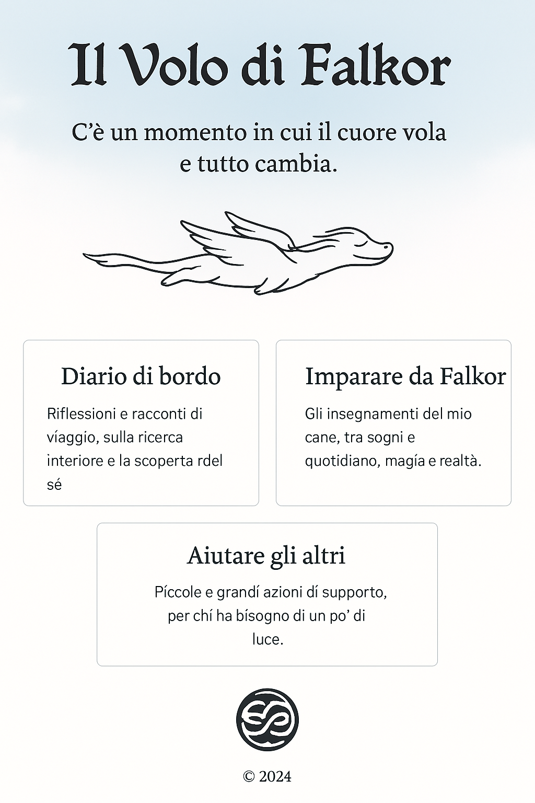

C'è un momento in cui il cuore vola e tutto cambia.
Riflessioni e racconti di viaggio, sulla ricerca interiore e la scoperta del sé.
Gli insegnamenti del mio cane, tra sogni e quotidiano, magia e realtà.
Piccole e grandi azioni di supporto, per chi ha bisogno di un po’ di luce.